There you are, on your own place at last ... and your joy turns to a sinking in the stomach when you look hard at the sagging, leaky reality of the buildings you're supposed to "fix up". In the enthusiasm of homestead hunting, maybe you sort of forgot that-while you like the idea of being handy with tools-you've never gotten very far into carpentry (not to mention metalwork or any of the other skills you'll probably need sooner or later).
Well-even if your saw squeals, your knife slips and your screws somehow always end up going in crooked-don't despair. Relief is in sight, in the form of a book called The Sensuous Gadgeteer, by Bill Abler. This new work is one "how-to" manual that really starts at ground level with which tool is which, what it's for and exactly how to use it. Better still, Bill also tells you just why the device functions as it does ... and that basic grasp of mechanics will do more than any list of "don'ts" to prevent you from mining a good drill or chisel by misuse or careless maintenance.
Useful as it is, the handling of simple tools is just the beginning of the lore you'll discover in The Sensuous Gadgeteer. With Abler as your instructor you may find yourself deep in processes you never dreamed of attempting: sawing and drilling plexiglas, grinding steel rod, sandcasting or any of the innumerable operations Bill explains in plain English.
A "feel" for his material-an understanding of its capabilities and its behavior under all sorts of conditions-is the craftsman's most valuable piece of equipment. It's probably true that this sense can't be taught directly, but Bill Abler (who subtides his book "Bringing Tools and Materials To Life") conveys it more successfully, for a wider variety of substances, than any other writer we've run across.
In short, if you didn't grow up looking over a handyman's shoulder-and how many of us did?- The Sensuous Gadgeteer is about the best substitute around ... as we hope you'll agree when you've sampled the pages that follow.
SPECIAL NOTE: The following section was picked up-page for page-from uncorrected layout sheets for The Sensuous Gadgeteer. Don't be alarmed if you note a typo or two and an odd reference to "the ball in the cage that you drew earlier"... which you know nothing about. The typos are there just to keep you awake and we couldn't very wit have preserved the flavor of the forthcoming book if we'd deleted the reference from the world's only copy of layout sheets for the guide ... now could we?
The knife is the basic tool. Chisels, scissors, planes, saws, even files and sandpaper are knives. Understand the knife and you will understand all these tools. Own a good knife and use it for cutting only, i.e., don't use it for a screwdriver or an awl or a lever. Know how to take care of it. A knife can be either a tool or a weapon; we are concerned here only with tools. When you go out to buy a knife you will encounter a bewildering variety of them in hardware stores and cutlery shops. They all look pretty, so don't be like the little kid who likes the taste of the green gumdrops but eats the red ones because they look pretty. You can get a folding knife (a jackknife) or a fixed-blade knife. Both are good, but the knife with the fixed blade will not fold up by accident and cut you. Your choice. Except for hacking your way through the jungles of the Amazon, or for cutting broad and vegetables, you will seldom need a knife with a blade as long as two inches (written 2"; two feet is written 2'). A fixed-blade knife with a blade that short is hard to buy. I bought one once about 1957, the handle broke about 1965, and I lost the blade before I got around to making a new handle. It is now 1972 and I have looked in hardware stores and catalogs from Maine to California and have never found another fixed-blade knife that small. So I made one for myself out of a car spring and a piece of ebony wood for the handle. The blade is 1 13/16" long. If you are just starting out you won't have tastes as stubborn as that but I don't think you will ever have much use for a knife with a blade any longer than two inches, because when a blade gets too long you can't control it.
The shape of the blade is also important. Probably the strongest blade is the symmetrical taper because the point is strengthened by a thick backbone of steel behind it. However the symmetry of the blade gives the eye no information as to which side is the cutting edge and which side is the back, so that you are guaranteed, once every five years or so, to mistake the cutting edge for the back and press your thumb against it. It only takes a second, and then it is too late. Get a knife with a scimitar blade. My own knife has a blade like this:
The back is rounded, not squared, so that I can press my finger or thumb against it without getting blisters. The cutting edge is curved so that it will present itself even to concave surfaces. The backbone of the knife is thick, for strength, and the sides of the blade taper slowly and uniformly to the cutting edge. This shape is very useful for making things as we will see in the next section on sharpening knives.
Get a small knife and learn how to sharpen and use it. Stainless steel blades won't rust, but they are too hard to sharpen in any reasonable length of time, and for some reason they don't stay sharp long in use. Carbon steel is better. If you get a jackknife (NOT a switchblade) make sure the blades don't wobble too much, and that the blades were forged or machined. Blades punched out of sheet metal will often crack in use, and then ... disaster! Spend the money now out of your pocket instead of paying later out of your hide.
Get a knife with a handle that does not feel like it is ready to fall off. If the handle is too smooth it will give you blisters.
When you buy your knife buy sharpening stones with it, a coarse and a fine stone (or a combination coarse-fine stone), and a hard Arkansas oilstone. The coarse stone is for rough sharpening your knife (taking off steel) and for getting nicks out of it. The fine stone is for sharpening the knife to a useable sharpness. The Arkansas oilstone (cut from novaculite rock) is for polishing the knife. Much of the dulling of knives is caused by rust which starts when water collects in the scratches left in the knife metal by the sharpening stone. If you polish the cutting edge with the Arkansas stone you will not give water a place to collect. Soak your stones thoroughly in oil when you buy them, and put a few drops of light oil or Three-in-One oil on them every time you use them. The oil keeps the stone from clogging. When the knife travels over the stone it grinds the stone to mud, while ribbons of metal are stripped off the knife. The oil floats away the mud and the metal ribbons. Without the oil the mud and metal will soon coat the stone with a smooth surface that is not abrasive, and the stone will be ruined. Synthetic corundum (A1 2 O 3 ) stones are excellent if you can find one. I think that big medical supply houses sell them for sharpening scalpels, but you might have to be a big customer to order from them. They are good because they are harder than other stones, and will quickly give a good edge to your knife without themselves getting worn down. You can also get big stones in substantial wooden cases. These are professional equipment. Get one if you expect to be using it every other day for the next ten years. An outstanding fine stone is the washita oilstone, if you can find one. The Whole Earth Catalog says, "You can't buy quality: You have to grow into it." This goes for knives and stones and everything else in life. When you buy a knife or a stone get the cheapest GOOD one you can afford, and USE it. If you need a better one or a more specialized one later, you will know.
In sharpening a knife remember that the knife cuts only when the sharp edge contacts the work. Thus:
The knife will still be good for vertical slices, but it will be no good for the carving of surfaces. And carving of surfaces is the essential action in cutting materials with a knife. The knife must be restored to its original wedge shape. Get out your kitchen knives and practice.
Oil up your coarse or fine stone (whichever is needed) and place it on a table with newspapers under it. Hold the knife against the stone with the cutting edge touching the stone at an angle of about thirty degrees. Some people sharpen their knives to an even keener angle (twentyfive degrees or less) but then the blade is thin and it will require more skill to use it without denting or cracking the edge. Holding the blade steady at this angle, push the cutting edge across the stone as if to cut the surface of the stone. As you push the knife, sweep it over the stone so that each part of the cutting edge contacts the abrasive surface. Hold the angle steady. Practice so that as each part of the curved cutting edge contacts the stone it is moving in a direction perpendicular to the edge at the point of contact.
Now turn the knife over and repeat the same motion for the other side. Keep flipping the knife over and working it this way until it is sharp. If the knife has been honed down to a good edge (such as the one shown in the first picture of a sharp knife) recently, it will take a new edge right away. If it has been used and re-sharpened several times recently, it will not sharpen up so fast, and will need a thorough grinding on the coarse stone to restore the old shape and edge. In this way, the sharpenings will move in cycles-first a thorough grinding, then touch-ups, then some sharpening, and eventually another thorough grinding. After you have some practice with sharpening knives you will know the knife is sharp by the sound of the steel on the stone. Many people test for sharpness by flicking a finger across the cutting edge. If the edge feels to have a "bite to it," then the blade is sharp. Many people test a knife for sharpness by drawing the blade across the edge of a sheet of paper held up in the air. If the knife cuts the paper, it is sharp. Some people call a knife sharp only when it will shave the hair off their forearm. All are correct.
Draw the blade across your thumbnail. If it feels smooth it is smooth.
To get the blade sharp enough to shave with, sharpen it on your Arkansas stone (using oil) until the blade is as sharp as it will get on that stone. Then strop the blade on a piece of leather. Stropping a knife on leather removes little wires of metal that cling to the edge after sharpening, and it even polishes down some of the scratch marks left in the metal by the stone. When stropping a knife, move the blade away from the edge so as not to cut the leather. You can strop a knife on paper if you don't have any leather.
Keep your knife sharp. You will not get cut on a sharp knife because the sharp edge enters the work and grips it. You will get cut on a dull knife because it will lose its grip on the work and slip out of control. Razor-sharp may be too sharp for some purposes, but because you have to work hard to get a knife razor-sharp, don't worry about it at first.
Hollow grinding a blade is cutting a concave surface in a blade. Razors and kitchen knives are hollow ground. Hollow grinding can be done only on a grinding wheel, so if you have only flat sharpening stones you can't get hollow grinding. Hollow ground blades have the property of taking a very sharp edge (because they are very thin) and of being easy to re-sharpen for that reason. Hollow ground knives are also fragile, for the same reason, and are best for cutting meat, vegetables, and hair, not wood and plastic. If you want to hollow grind your knife edges, it can be done on a big, slow-sharpening wheel. (NOT one of the fast, coarse, small shop-grinding wheels.) Turn the wheel and hold the knife against it.
When you finish using a coarser stone wipe the knife with a rag to avoid carrying the coarse grit to the finer stone. Wrap the rag around the BACK of the knife to avoid cutting the rag and possibly your hand.
When the knife is sharp, carve something with it. A strenuous but rewarding exercise is to carve out of a single block of wood the ball in the cage that you drew earlier. To do this will require some knowledge of wood and woods.
The sculptor Robert Engman says, "The best use of wood is the tree," because in the form of a tree the qualities of the wood are put to use in the most efficient way, and all the properties of the wood are used. Wood conducts sap, and it bears weight. It resists attacks by insects and fungi. When we cut down a tree to take advantage of its weight-bearing properties (and its beauty) we must keep it healthy by replacing with oil the sap that is no longer available to it.
The living part of the tree is a cylinder of living tissue just below the bark and the tree grows as this tissue dies at its inner surface and cells multiply at its outer surface. Thus the major part of the weight of any tree is dead tissue-the wood. Wood is composed of fibers than run parallel to the axis of the tree. Because the growth of the tree runs in annual cycles, the wood fibers do not grow at a uniform rate throughout the year, and the wood shows annual growth rings. These rings (or annuli) which we see at the end of a cut log or branch are really cylinders of fibers that run the length of the wood, and in a cut piece of wood they are called the grain.
Two major traumas occur in the grain when the tree is cut down and sawed into blocks or timbers or boards. First, trees seldom grow absolutely vertical, so that the wood grows under the stress of the weight of the tree. When the tree is cut, its weight no longer rests on the grain, and the grain itself becomes stressed. Second, when the tree is cut into boards or blocks the cylindrical balance of fiber stresses is further disturbed. When water lubricates the wood so that the fibers can move past each other, this stressing results in warping if the wood is soft or thin, and in cracking if the wood is hard or thick.
People have found ways to work with wood in spite of its tendency to warp and crack. The first method is to age the wood, let it crack and warp, and then use the places that are not cracked and warped. For example the wood in some musical instruments is pear wood or ebony that had been aged twenty-five years or more. The instrument manufacturer builds his instrument between the cracks. Of course by cutting the wood he further disturbs the balance in the grain, and a new clarinet may crack during the first six months of use. If it survives the first six months it will be good for years. The best way to prevent cracking in very hard wood such as teak and ebony is to replace in them the oils that begin to be lost when the tree is cut.
Another method used to prevent warping in boards such as guitar necks is to balance the warping forces in one piece of wood against the warping forces in another. This is done by cutting the board lengthwise parallel to the grain, and folding down the two cut pieces so that the nearly identical grains on the two sides of the saw cut are showing back-to-back on top. The two pieces are then glued together.
A further extension of this method, and one of the great inventions of all time, is plywood. Plywood is made from wood sheets (plies) glued together. To make plywood the manufacturer places the axis of a straight pine tree on the spindles of a huge lathe, and holds a long knife against the turning tree. The knife peels the tree into a continuous sheet of parallel fibers. The sheets are then glued together with the fibers traveling in different directions. The resulting board won't warp or bend. Plywood is commercially available in 4 x 8 foot sheets in 1/4, 1/2, 3/4, and 1 " thicknesses, in marine grade, outdoor grade, indoor grade and utility grade. Utility grade plywood has knotholes on the outside. It is not pretty and is sometimes called unfinished.
When selecting a piece of wood for carving, select one that you either want to carve or to own. Different trees produce different woods as solutions to the problems of survival in different climates and habitats. In some places competition for light is important. In some places defense against insects is important. Here is a very short list of woods, enough to get you started, with some information about each. NOTE: softwoods and hardwoods come from evergreen and deciduous trees respectively. The words soft and hard have nothing to do with the softness or hardness of the woods.
PINE-The wood of the construction industry. Plywood is made from pine. House timbers (the famous 2"x4" and 4"x8", which are cut in fourteen-foot lengths) are pine. If you go to a lumberyard and insist on getting ordinary wood you will get pine. Pine, a softwood, is good for structural building such as houses and bookcases, but is too soft for the best carving. When the knife pushes against pine the fibers are too soft to stand up, and they mash together into a mat that is as difficult to cut as a telephone book. The masts of sailing ships were pine trees, and some old trees in New England, marked for mast poles in preRevolutionary times, still show the King's mark on their trunks.
CEDAR-A softwood, cedar is so hard that it can be polished like a gem and worn in a ring. Cedarwood is stuffed with aromatic oils, apparently as a defense against insects, and it is these oils which protect clothes from moths in cedar chests and closets. Cedarwood is red and yellow.
OAK-Oak is a hard, open-grained hardwood. Its hardness apparently gives it strength against the wind, but its open grain makes it too rough for small carvings. It is excellent for large carvings and furniture. Oak is white. A freshly-cut oak tree smells like green Spanish olives in brine.
MAPLE-A hard, clear-grained hardwood. Maple is good for furniture but the wood is so clear that it gives uninteresting carvings.
WALNUT-A hardwood. Walnut can be purple or brown, hard or soft, fine-grained or coarse-grained. It is good for furniture, and a hard, close-grained piece would make a fine carving.
ROSEWOOD-Beautiful brown-and-tan striped wood. Most commonly seen in the USA as the handles of stainless steel kitchen knives. Popular as a veneer on tables in modern Scandinavin furniture, rosewood is soft but beautiful, and it would make good carvings.
TEAK-From India. "Elephants a-pilin' teak" "Road to Mandalay" by R. Kipling. Teak is used for the decks of ships. Teak takes up minerals into the wood, probably as a defense against chewing insects, and the wood will strike fire against your power saw, and dull it like a butter knife before long. Teak is a pleasure to carve because the fibers stand up to the blade and allow themselves to be cut one at a time. Teak is so oily that its sawdust can be packed into little clods, and the greasiness gives it the water repellency to serve not only as a ship's deck, but as a jam spoon or butter knife. After carving and sanding teak, oil it with the oil from your face. Teak ranges in color from tan-and-black stripes to solid honey. Some pieces are more close-grained than others, and the close-grained pieces are the most water repellent.
MAHOGANY-Mahogany is soft but water resistant and is used in ship building. Mahogany has characteristic rows of white spots running perpendicular to the grain, and these make the wood look almost like skin. Mahogany can be either white or red. The white is used for Japanese motorcycle crates, but only about one percent of that is strong enough for carving.
EBONY-The wood of clarinets. The ebony log is black on the inside and yellow on the outside, and the black wood is harder. The wood is so dense and heavy that the tree must have grown under terrific stress, and it must be cut and carved gradually, over a period of weeks, to give it time to relax. It needs to be oiled. Otherwise it will crack. Ebony is tough and will take wear and use, but it is slightly brittle and may crack if shocked. Like teak, ebony takes up minerals into the wood, and a freshly cut sliver of ebony sparkles in the grooves of the grain. Ebony sawdust violently attacks the eyes and nose. Ebony brings $3.85 a pound in specialty lumber houses.
LIGNUM VITAE-The Lifeline Tree, the hardest wood in the world. It is fibrous and the fibers can be red, green, yellow, black and brown. Lignum vitae sawdust is green. Apparently as a defense against insects, the wood is terribly greasy, and if you touch a freshly broken piece you will get the thick, sticky grease on your hands. Until the advent of Teflon, the bearings of large ships' propellers were lignum vitae, and many a World War II heavy ship had to ride it out in a harbor waiting for the delivery of a log of lignum vitae wood. Sometimes lignum vitae is used for bushings to hold guitar pegs; the grease in the wood guarantees that the pegs will turn without sticking. The wood is so hard that it would be hell to carve, but it would make excellent buttons or belt buckles or hair pins.
For your first carving select a block of wood not bigger than 2 1/2" x 2 1/2" x 5". I recommend good pine or cheap mahogany for a first piece of work, and after that you can decide when to try walnut, teak and rosewood. Because the world's suppy of precious tropical woods such as ebony is being used up but is not being replenished, please use some scrap wood such as pine for your first efforts (and mistakes) and use precious woods only for special projects.
When you work a piece of wood the most important feature you will deal with is the grain. If you cooperate with the grain it is your best friend. If you fight the grain it is your worst enemy. A newly cut piece of wood will look like this:
As you cut the wood you will cooperate with the wood grain if you press the fibers together with the knife. You will fight the grain if you pry the fibers apart with the knife, as this will rip up large sections of wood beyond your control.
When working with a knife, what you want most of all is control. That is why a short knife is better than a long one-you can control it. Never do things with the knife that are likely to send it out of control. For example don't rest the blade on the surface of a block of wood and then push the knife in the direction of its axis, without bracing your thumb against the side of the block and rationing the motion with your thumb. If uncontrolled pressure is applied the block will tip or the knife will slip, and the knife will go out of control. If you are holding the wood with your other hand the knife will slice your index finger to the bone. Never cut toward yourself.
Much effective carving can be accomplished by shaving off material with the knife. Slice after slice, thin slices. Set a convenient part of the blade into the place to be cut, and rotate the blade against a convenient pivot point somewhere else on the cutting edge. In a hollow part of the work the pivot point can be the place where the back of the knife meets the work. You can control the knife by squeezing it along with thumb pressure on the back.
You now know enough about carving wood to do some pretty competent cutting. The knowledge needs some practice to apply consistently. Wood will tolerate being cut perpendicular to the grain. Wood can be cut, chiseled, planed and filed with the grain or across the grain, and it can be sanded with the grain.
It is one thing to know how to carve wood and quite another to know how to carve the objects you want out of wood or any other material. This is a question of knowledge, not of strength, skill or experience. INSTRUCTIONS: In order to carve the object you want out of any block of material, place the block of material in front of you and envision the object you want floating inside of it. When you can clearly see the object you want, pick up your tools and cut away everything else. This method works and it is the only one that does. Don't allow any other method to even cross your mind.
The more rigidly geometrical your object is, the easier it will be to carve.
When carving an object, work it around and around on all sides, keeping the whole piece of work at the same level of completion everywhere, never letting any part get ahead of the others. If one part gets too far ahead of the others, the piece will never get back together again.
When you have finished a wood carving and you want to smooth it, sand it first with medium, then with fine, then with finest sandpaper. If the wood is very hard it might take sanding with crocus cloth. Pine can be painted, stained, varnished or shellacked. Fine woods can be varnished, and the finest woods should be oiled or waxed with linseed oil, human face oil, Butcher's wax or lemon oil.
These two cutting blades go together because they both fit on the same frame and because they both cut hard materials. The hacksaw is a thin metal blade mounted on a back. The hacksaw cuts lead, copper and copper alloys, and soft iron and steel. The knack to using the hacksaw consists of knowing how to keep the blade moving straight. No wobbling. This comes with practice. When the blade wobbles it binds in the groove it has cut, and it either catches or breaks.
Hold the work to be cut in a vise or on a convenient surface. and start the cut by resting the blade on the work, steadying it with your free thumb, and drawing it toward you slowly. This will nick the surface of the work and give the saw a guide place to start cutting.
The saw does its cutting when it is moving away from you and the sharp points of the teeth are entering the material to be cut. The speed of cutting depends on the pressure applied to the saw, not on the speed of the saw, so work slowly and evenly, and bear down on the power stroke. You may want to hold both ends of the saw, but this requires some practice to keep the saw from wobbling. Put a little cutting oil on the blade. This will carry away metal chips and will keep the work cool.
Touch the saw teeth every so often to see if they are still sharp. When they get dull, change the blade. Different hacksaws change blades in different ways, so find out when you buy your saw how to change its blades. The most common hacksaws change blades by turning a wingnut that loosens a square bolt that holds the blade. Some newer saws loosen the square bolt by turning a lever.
If you think that the hacksaw blade has grown dull too soon to suit you (say, after cutting 1/8" of material) get a tungsten carbide wire saw. There are several on the market, and most are good. Stay away from the ones with the washers on the ends to hold the wire saw to the saw frame because the washers have a way of breaking off prematurely. The disadvantage of the carbide saw is that it is three times thicker than the hacksaw blade, and you have-to grind three times as much steel to powder before you have your cut. However the carbide saw will cut car springs, stainless steel, bricks, rocks, tiles and bottlesjust like a billy goat. Keep your carbide saw cool, and your lungs free of dust, by oiling the blade with cutting oil when you use it. The carbide saw will cut a straight line.
For small delicate work it is sometimes handy to sit in a chair, rest the hacksaw handle on the seat between your legs with the blade facing away from you, and lean the back of the saw against your chest. Hold the work in your fingers and draw it carefully against the blade.
Except for unusual jobs, use hacksaw blades with medium teeth. The hacksaw is handy for cutting very hard tropical woods. The cutting edge is dull when it begins to feel the least bit slippery to the touch.
Peen is a verb that means to round a thing down by hammering on it. The ball peen hammer is for rounding down and shaping soft metals. The ball is the rounded end of the ball peen hammer.
Use the ball peen hammer for working copper, brass, lead, aluminum, silver, soft iron and sheet steel.
One of the virtues in a finished piece of metal work is its smooth surface, so when you buy a new ball peen hammer polish the hammering surfaces until you can see your face in them. Then they will not put marks in the work. Metal work with marks in it not only looks and feels cheap, but corrodes and wears quickly.
Polish the hammer surfaces by rubbing them on oiled emery cloth held in the palm of your hand or the tips of your fingers. Start with medium grade emery cloth, then fine grade, then finish the polishing with oiled crocus cloth, the finest emery cloth made. These are available at your local hardware store. When you use the abrasive cloth, rip off squares about 2"x2" and use these. You get the job done, and conserve sandpaper.
A good exercise in using the ball peen hammer is making rivets. While the ball peen hammer is used for all soft metal work, its full potential is fulfilled in the making of rivets.
The principle that the ball peen hammer works on is that metals, under sufficient pressure, will flow like clay. When the pressure is released, they become hard again. So when you are working metal with the hammer, imagine that you are pushing clay with the hammer. Strike the hammer firmly against the work and hold it against the work after is has struck. Do not let the hammer bounce off the work. That way you will take advantage of the clay-like qualitites of the metal.
Using a hacksaw, cut off a 1 " slug of iron from a medium sized nail and peen a rivet head into one end. Hold the slug vertical in a metalworking vise and leave about 3/16" protruding above the jaws. Beat on the iron with the hammer, straight down at first to swell the end, and then around and around to dome off the end of the rivet. If the rivet shaft becomes bent, straighten it by laying it on an anvil or piece of hard wood and pound down the high places. File off any slivers.
Be careful never to hit the anvil with the hammer. This will dent both and ruin both permanently.
If you buy a hammer head new, or if you have a hammer with a broken handle, you will want to replace the handle. Removing the old handle from the head is never easy. Some people burn it out with fire (this weakens the metal head) and some cut it out with a knife. Buy or make a hickory wood handle to fit the hammer head. The shaft of the handle should run parallel to the grain of the wood and the lines of the grain at the ends of the handle should run up and down-just like a baseball bat. The force of the hammer will flex the grain, not cut across it at right angles and break the handle. The handle must be smooth to prevent blisters. Fit the end of the handle snugly into the head, trimming the handle until it fits. Using a saw cut a thin split into the handle where the head fits. Commercial hammer handles come already split. Make a wooden wedge and drive this into the split. The wedge will cause the handle to swell and grip the head. You can buy metal wedges. Never use nails instead of wedges. For general tightening of a hammer head, strike the butt end, not the head end, against a wood block.
Another good exercise for the ball peen hammer is to shrink one end of a copper plumbing fitting. Rest one end of the fitting on an anvil and tap firmly around and around on the end you want to shrink. Holding the anvil directly opposite the place you tap against gives the effect of hammering on the work from both sides at once. I once used this method for adapting a microscope tube to a new ocular.
A chisel is a knife that you move by tapping on it with a mallet instead of pushing it with your hand. A chisel, like any other knife, cuts by pressing the wood fibers together, not by prying them apart, except when large portions of material are to be removed. In this case dig a deep trench around the portion to be removed and split out the unwanted material by prying the grain apart. This method works on wood, which has a grain. It will not work on plastic, which has no grain. Plastic can and sometimes must be cut with a chisel or knife, especially when the plastic is stressed, but the plastic must always be shaved away in thin ribbons. Otherwise it will shatter. Essentially there are two kinds of chisel: the straight-edge chisel and the gouge.
The straight chisel is used for cutting out recesses in the shape of rectangular solids in wood, as for sinking a hinge into the edge of a door. The gouge cuts a trough out of a surface and can be used for the shaping of intricate curved surfaces.
The gouge is used for carving wood or for removing portions from wood surfaces. For example, if you want to remove a stained place in a wood floor and replace the stained wood, use a gouge to remove a lozenge-shaped hollow in the portion of wood around the stain. Then carve a block of wood to fit in the cavity in the floor. When the block nearly fits in the cavity, set it in the cavity and tap on it with the mallet. Then remove it. Some places will be shiny. These are the high spots. Sand them down and repeat the process until you are satisfied that the plug fits the hole well enough. Line the cavity with glue and place the replacement block in it, bracing it down by wedging a narrow board between the plug in the floor and the ceiling. Cover the ends of the board with cloth to protect the floor and the ceiling.
Gouges can be sharpened on specially shaped India stones that you can buy at big hardware stores. Sharpen your straight-edge chisels on a shop grinding wheel. The grinding wheel is usually a 4000 rpm (revolutions per minute) coarse carborundum wheel riding next to a small metal table that steadies the work.
When sharpening the chisel (or any other tool) on the wheel be careful to keep the tool moving. If the chisel stands still on the wheel the metal will heat up and lose its temper. If the metal gets a blue scorch on it you will know that it is ruined. The temper of metals is their springy quality which guarantees they will be strong without being brittle.
Temper (like the other formulas described here) is not fully understood but it is believed to be a function of the size, shape and orientations of the crystals in metals and alloys. Because temper is not understood, the formula for obtaining a good temper in a metal is discovered by trial and error. Such a formula, once found, is priceless, and lives have been taken in struggles to obtain formulas for well-tempered sword metal.
Simple hardness in a metal is obtained through the small size of the metal crystals. This is got by heating the metal to disturb the crystal structure and then quenching it in water. Quenching cools the metal quickly and does not allow the crystals time to grow large before they are too cold to grow at all. Metals thus tempered are hard but seldom supple. If a metal is heated red hot or nearly red hot and allowed to cool slowly, the metal crystals will have time to grow large. The large crystals are soft, and the metal is soft, and that is why a scorch on a chisel means that the chisel has been ruined by too much heat-it shows that the metal is soft. This softening of the metal by heat is called annealing. Annealing can be useful: If you want metal to be soft, anneal it. Annealing glass relaxes stresses in the glass and thus lessens the likelihood of breaking.
Incidentally if you want to see the crystals in a metal alloy, look at a well-used brass door handle, such as one on a popular public building. You will see a patchwork of rectangles up to 1/8" in dimension crosshatching the surfaces. These are zinc and copper crystals. All metals are composed of crystals. The network surface of a cold solder joint arises when the tin and the lead crystallize out of the melt separately. This separate crystallization of materials out of a melt is put to practical use in zone refining.
Tap your chisels with a wood or leather mallet, not with a metal hammer.
The plane is a chisel that peeks through a slot in a flat guide. The plane usually has two uses-cutting large splinters off from the surface of wood planks and removing small amounts of wood from the edges of boards such as doors. When your door sticks in one corner, take down the high place with a plane. The flat guide of the plane ensures that the chisel will take only a controlled bite out of the surface to be cut. If the plane takes too deep a bite into the wood it will catch and rip up chunks of wood. But if the plane takes only a shallow bite out of the wood, and if it is moved smoothly and firmly across the wood, the plane will bring the wood up in uniform ribbons up to three feet long. The plane operates with the grain or across it at an angle, never against it.
The bite, or depth of cut, taken by the plane is adjusted by the knurled nut next to the handle. The tilt of the knife is adjusted by the lever in the knife holder.
Never set a plane down on its face as this will chip the blade.
Set the plane down on its side. Sharpen the blade on the grinding wheel like any other chisel.
Guitar and violin makers use large precision planes for finishing the surfaces of the thin wood boards from which they construct their instruments.
The folks at Running Press in Philadelphia tell us that The Sensuous Gadgeteer will be out this fall ... in fact, it might very well be available by the time this issue reaches you. The book will sell for $3.95, a modest price for over a hundred great-big, information-packed, paperback pages. After all, if Abler can convince you that you really don't have more than the usual number of thumbs, the boost to your ego alone will be worth the four bucks ... and when you throw in all you'll be able to do for your homestead with Bill's help, TSG just about has to be one of the best bargains you'll find anywhere.
|
|
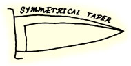 |
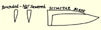 |
|
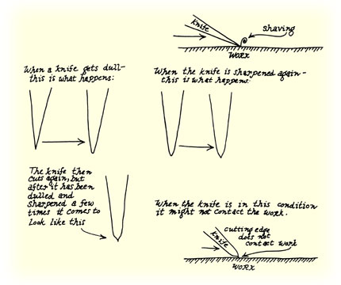 |
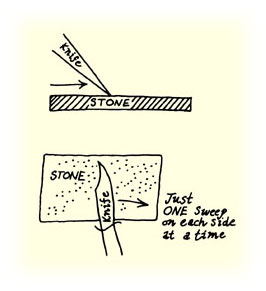 |
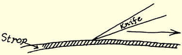 |
|
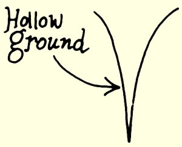 |
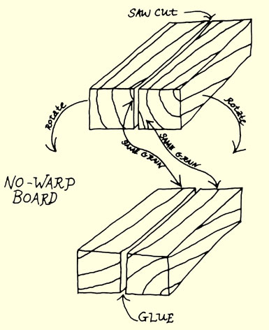 |
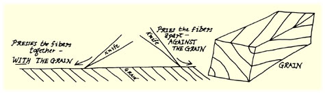 |
|
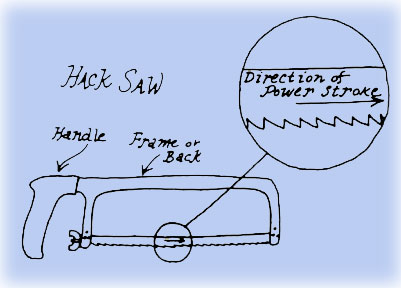 |
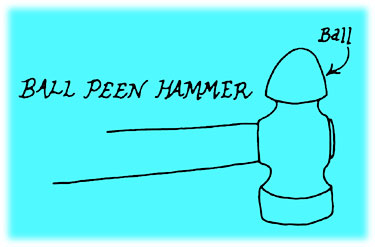 |
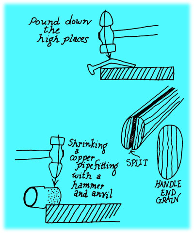 |
|
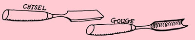 |
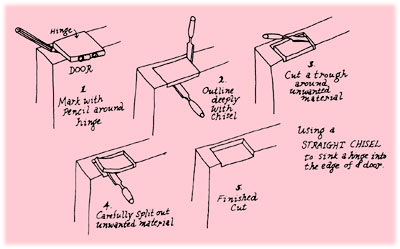 |
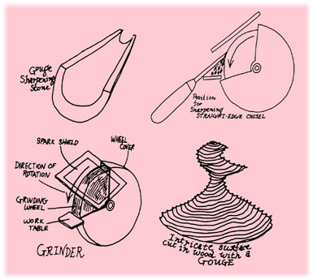 |
|
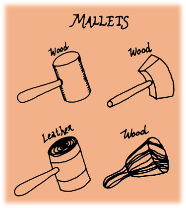 |
|
|